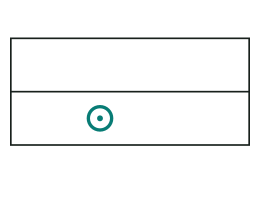
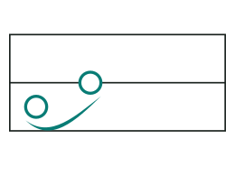
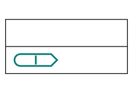
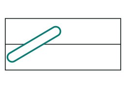
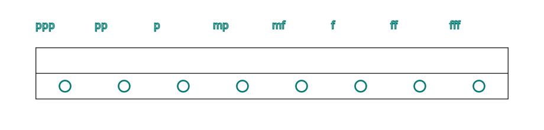
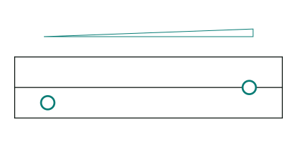
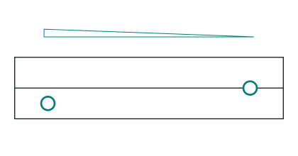
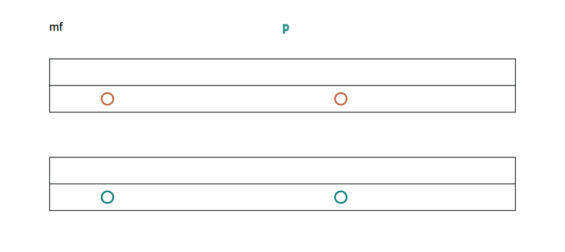
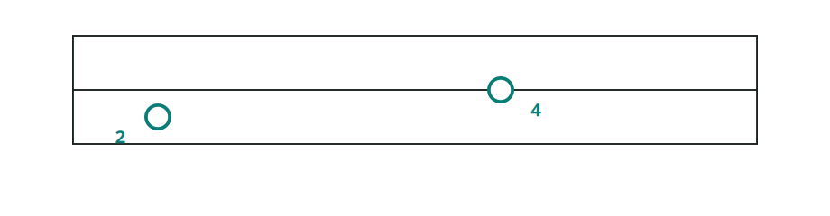

Add expression
Small marks tell a player how to start, join, or change a sound.
Rule: Read the note's pitch and length first. Then read any mark attached to it.

StaccatoShort and separate.
SlurJoin notes smoothly.
FermataHold longer. Trill · one stepOne zigzag.
Trill · one stepOne zigzag. Trill · two stepsTwo zigzags.
Trill · two stepsTwo zigzags.
GlissandoMove through pitches.What each mark means
Staccato
The dot inside a note means play it briefly, with space before the next sound. Its written place in time does not move.
Slur
The curve joins notes in one smooth phrase. Follow it from its first note to its last.
Fermata
The pointed end asks you to hold the note longer than its written length.
Trill
Start on the written pitch, then switch back and forth with a nearby pitch. One zigzag means one semitone away; two stacked zigzags mean two semitones. The zigzag points up or down to show which way to move. It does not say how fast to switch. See all four trill marks.
Glissando
The long diagonal note moves through the pitches between its start and end. This is a slide, rather than a jump directly to the last pitch.
Loud and soft
A dynamic tells you how loud or soft to play. The letters come from Italian: piano means soft, mezzo means moderately, and forte means loud. A written level lasts until another level or a changing-volume mark changes it.

p stands for piano, and f stands for forte. More letters make the effect stronger: pp is quieter than p, and ff is louder than f. mp means moderately soft; mf means moderately loud.
Change the volume gradually


The triangle shows where the change begins and ends. Its shape shows the direction; it does not set an exact volume by itself.
All melodies or one melody?
A melody is one line of notes. A common dynamic applies to every melody. A mark for one melody changes only that melody.

Common marks are filled black. Marks for one melody are outlined in its color. The same rule applies to the volume triangles.
Other marks
A small number beside the lower corner of a note suggests which finger to use. On the lower left, it is for the left hand; on the lower right, it is for the right hand. Fingers are numbered from 1 for the thumb to 5 for the little finger. The number helps the player but does not change the sound.
